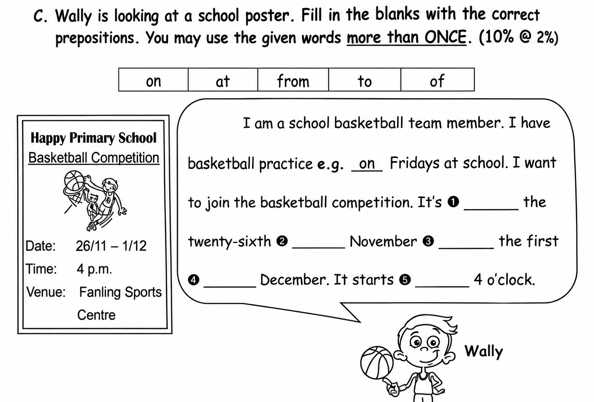
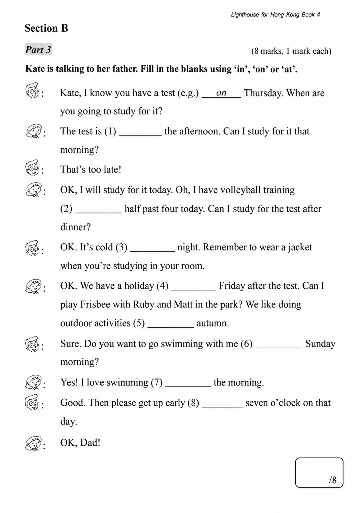

已掌握
| # | 中文意思 | 例句/提示 | 英文默写 | 已掌握 |
|---|---|---|---|---|
| noun 名词 | ||||
| 1 | 父母 | My love me. | ||
| 2 | 网站 | The school has news. | ||
| 3 | 市场 | There is a near my home. | ||
| 4 | 宠物 | My is a hamster. | ||
| 5 | 未来 | I will study hard in the . | ||
| 6 | 神明 | Zeus was a in Greek stories. | ||
| verb 动词 | ||||
| 7 | 付款 | I for the book. | ||
| 8 | 讨厌 | I noisy places. | ||
| 9 | 建议 | I we play outside. | ||
| 10 | 庆祝 | We my birthday. | ||
| phrase 短语 | ||||
| 11 | 年龄 | I am seven . | ||
| noun phrase 名词短语 | ||||
| 12 | 学校制服 | We wear at school. | ||
| adjective 形容词 | ||||
| 13 | 不爱干净的 | My brother is and leaves his clothes on the floor. | ||
| 14 | 礼貌的 | It is to say thank you. | ||
| 15 | 干燥的；干的 | My clothes are now. | ||
| 16 | 湿润的；湿的 | My shoes are from the rain. | ||
| 17 | 聪明 | The child solves the problem. | ||
| modal verb 情态动词 | ||||
| 18 | 必须 | You finish your homework. | ||
| uncategorized 未分类 | ||||
| 19 | 通知 | A on the door says the library is closed. | ||
| 20 | 铁路 | The connects the two towns. | ||
| # | 单词/词组 | 中文意思 | 例句/说明 | 已掌握 |
|---|---|---|---|---|
| adjective 形容词 | ||||
| 1 | naughty | The naughty puppy runs around. | ||
| 2 | cuddly | The toy bear is very cuddly. | ||
| noun 名词 | ||||
| 3 | snack | I often have a snack after school. | ||
| 4 | website | The school website has news. | ||
| 5 | content | This book has interesting content. | ||
| 6 | kilogram | The bag weighs one kilogram. | ||
| 7 | stadium | The game is in the stadium. | ||
| 8 | PE | He's good at PE. | ||
| 9 | stocking | We also like to hang up Christmas stockings on our bedroom doors. | ||
| noun phrase 名词短语 | ||||
| 10 | department store | We shop at the department store. | ||
| 11 | police dog | The police dog is clever. | ||
| 12 | a towel | He gave her a towel. | ||
| verb 动词 | ||||
| 13 | chase | The dog may chase the ball. | ||
| 14 | bark | Dogs sometimes bark at strangers. | ||
| phrase 短语 | ||||
| 15 | reading comprehension | We practise reading comprehension at school. | ||
| verb phrase 动词短语 | ||||
| 16 | cheer sb. up | I tell Tom a joke to cheer him up. | ||
| 17 | play badminton | I can play badminton but I can't play football. | ||
| 18 | play the recorder | We play the recorder in Music class. | ||
| 19 | take a nap | I take a nap after lunch. | ||
| 20 | watch fireworks | We watch fireworks in Tsim Sha Tsui. | ||
| 21 | eat moon cakes | We eat moon cakes at the Mid-Autumn Festival. | ||
| 22 | pick up | We go to the beach and pick up the rubbish. | ||
| uncategorized 未分类 | ||||
| 23 | circle | Please circle the correct answer. | ||
| 24 | teenager | My brother is a teenager. He is fifteen. | ||
| 25 | refuse | I refuse to tell a lie. | ||
| 26 | paragraph | Read the first paragraph of the story. | ||
| 27 | corresponding | Write each answer in the corresponding box. | ||
| adjective phrase 形容词短语 | ||||
| 28 | end-of-year | We are getting ready for the end-of-year exam. | ||
| prepositional phrase 介词短语 | ||||
| 29 | in line | Please wait in line for the bus. | ||
| conjunction 连词 | ||||
| 30 | but | Benny is small but he eats a lot. | ||
| # | 中文意思 | 例句/提示 | 英文默写 | 已掌握 |
|---|---|---|---|---|
| time/date 时间日期 | ||||
| 1 | 十一月 | is the eleventh month. | ||
| 2 | 星期二 | is a weekday. | ||
| time unit 时间单位 | ||||
| 3 | 月 | A has many days. | ||
| 4 | 周 | A has 7 days. | ||
| 5 | 分 | A has 60 seconds. | ||
| numbers 数字 | ||||
| 6 | 2 | is 2. | ||
| 7 | 3 | is 3. | ||
| 8 | 5 | is 5. | ||
| 9 | 7 | is 7. | ||
| 10 | 80 | is 80. | ||
| ordinal numbers 序数 | ||||
| 11 | 第一 | This is the shape. | ||
| solid shape 立体图形 | ||||
| 12 | 三棱锥 | A has triangular faces. | ||
| 13 | 圆锥 | A has one curved face. | ||
| 14 | 侧面 | A is on the side. | ||
| geometry 几何 | ||||
| 15 | 邻边 | These are . | ||
| # | 单词/词组 | 中文意思 | 例句/说明 | 已掌握 |
|---|---|---|---|---|
| numbers 数字 | ||||
| 1 | 3-digit number | A 3-digit number has three digits. | ||
| operations 运算 | ||||
| 2 | subtraction | Subtraction means taking away. | ||
| 3 | be left | How many apples will be left? | ||
| geometry 几何 | ||||
| 4 | angle | An angle is formed by two rays with the same endpoint. | ||
| 5 | perpendicular line | Perpendicular lines meet at a right angle. | ||
| 6 | parallel | Parallel lines never meet. | ||
| question word 题目词 | ||||
| 7 | onwards | Count onwards from 20. | ||
| comparison 比较 | ||||
| 8 | more | 8 is more than 5. | ||
| 9 | lighter | A pencil is lighter than a brick. | ||
| time/date 时间日期 | ||||
| 10 | leap year | A leap year has 366 days. | ||
| 11 | minute hand | At three o'clock, the minute hand points to 12. | ||
| 12 | large division | The hour hand moves one large division in one hour. | ||
| 13 | small division | The minute hand moves one small division in one minute. | ||
| position 位置 | ||||
| 14 | front | The door is at the front of the room. | ||
| 15 | above | The clock is above the board. | ||
| operations calculation 运算 | ||||
| 16 | A times B | A times B means multiplication. | ||
| 17 | division | Division is the opposite of multiplication. | ||
| 18 | remainder | The remainder is left after division. | ||
| teacher math vocabulary 老师数学词汇 | ||||
| 19 | each | Each child has three pencils. | ||
| currency money 货币 | ||||
| 20 | dollar | One dollar has 100 cents. | ||
| 21 | pay for | I pay for the book. | ||
| 22 | note | This is a five-dollar note. | ||
| 23 | coin | The coin is round. | ||
| measurement 测量 | ||||
| 24 | distance | Find the distance between the two points. | ||
| 25 | weight | The weight of this bag is 2 kg. | ||
| 26 | width | The rectangle has a length of 8 cm and a width of 5 cm. | ||
| position order 位置和顺序 | ||||
| 27 | following | Answer the following questions. | ||
| 句型结构 | ||||
| 28 | Angle ... is the smallest. | Angle B is the smallest. | ||
| 29 | ... is to the west of ... | The bank is to the west of the school. | ||
| plane shape 平面图形 | ||||
| 30 | right-angled trapezium | A right-angled trapezium has two right angles. | ||

